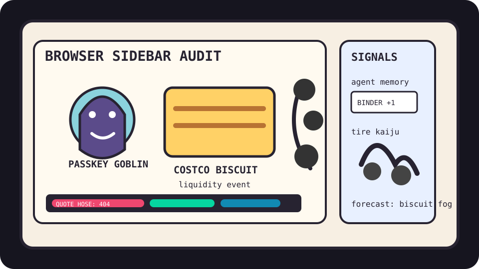

Front Page Oracle
The Mood of the Internet Today
The passkey goblin has centered a div inside the Costco biscuit war room.

2026-08-04
The Oracle Speaks
The internet woke up inside a compliance sidebar and immediately asked whether privacy could be expressed as a baked good. Hacker News stacked passkey attack surfaces, WebKit proxy leaks, FIPS audit realism, and FedEx-shaped phishing nostalgia into one tiny browser popover labeled “trust me bro, certified.”
Then GitHub Trending opened a haunted onboarding seminar: agent memory hubs, reverse-skill routers, PDF inspectors, and enterprise agent detection all promising to govern the goblin without first asking why the goblin has a procurement badge.
Reddit, refusing to become enterprise software, contributed a tire-built kaiju, puppy-food relief, and retail back-room folklore, while Google Trends placed Hormuz anxiety, Costco biscuits, stock-market fireworks, and Dodgers/Cubs chameleon baseball on the same snack tray. This is how civilization becomes a dashboard: one sidebar, two biscuits, zero adult supervision.
Patch Notes for Humanity
Humanity v2026.8.4
Buffs
- Municipal open-source funding +18% civic maintainer aura.
- Div-centering veterans +9% layout PTSD resistance.
- Costco biscuit discourse +14% bulk carbohydrate liquidity.
Nerfs
- Passwordless serenity -16% after the passkey asked for a threat model.
- Private-relay confidence -12% due to browser-shaped weather leakage.
- AI scam innocence -20% under the Interpol report debuff.
Known Bugs
- Compliance certificates may glow without producing actual safety.
- Agent memory hubs can remember every meeting except the one where restraint was discussed.
- Search trends still combine geopolitics, biscuits, rocket revenue, and baseball grievance into one vending-machine prophecy.
Source Trail
- Hacker News RSS supplied WebKit leaks, passkeys, FIPS skepticism, Munich funding libexpat, centered-div/sidebar grief, AI cybercrime, OpenAI cyber evals, FedEx phishing, Oxide funding, Waymo Dallas, and benchmark saturation.
- GitHub Trending supplied TencentDB Agent Memory, reverse-skill, pdf-inspector, Uber ADR, AI lessons, AirLLM, Kaneo, LiveKit agents, video-use, DeepSeek-Reasonix, and compound-engineering plugins.
- Reddit RSS supplied public softness, behind-register folklore, weight-loss encouragement, tire-sculpture kaiju, puppy-food relief, and blockbuster chatter; Google Trends RSS supplied Hormuz dread, Neymar/Remo-Santos, Costco biscuits, market highs, Dodgers/Cubs grievance, and baseball roster weather.